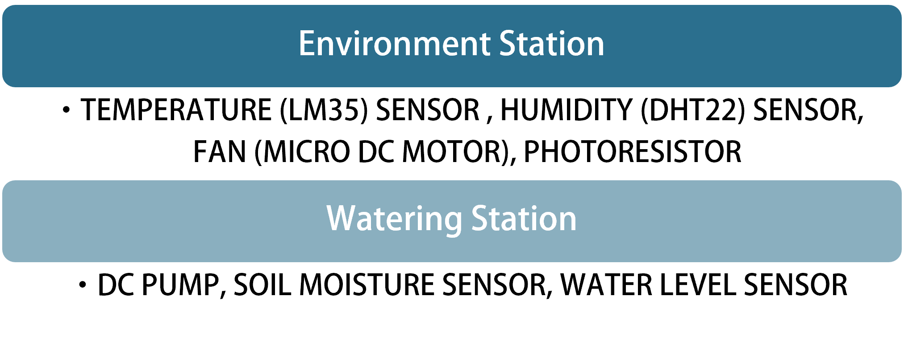
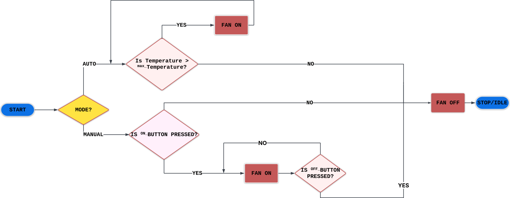
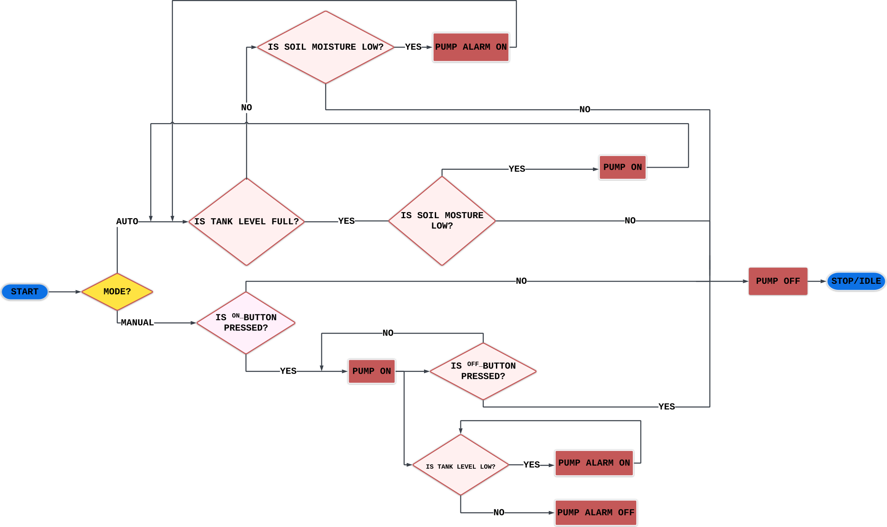
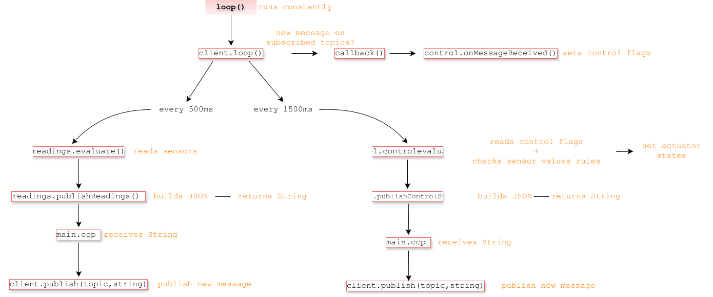
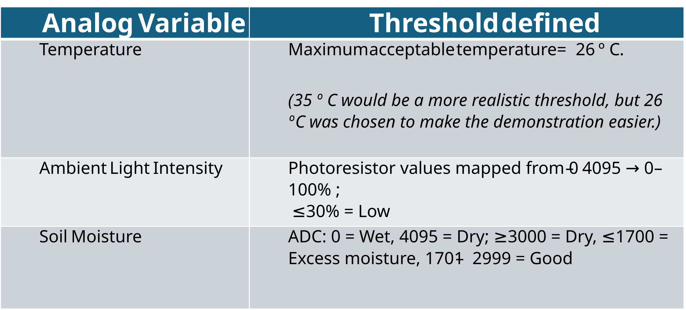
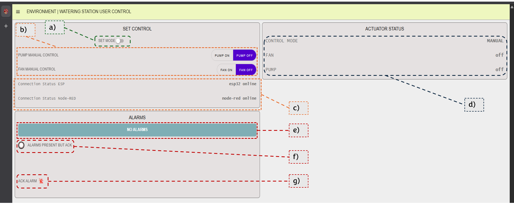
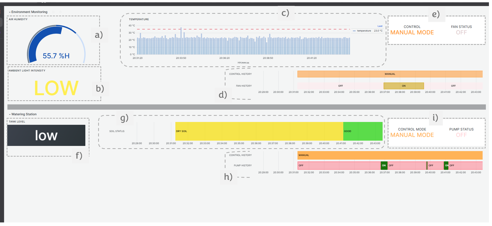

Environment Monitoring & Watering Control System using ESP32 and MQTT
An MQTT-powered system with real-time environmental monitoring, state evaluation, actuator control, and continuous data logging. Key features include:
- Real-time data transmission
- Publish/subscribe architecture
- Modular object-oriented (OOP) Code Structure
- Fault tolerance (MQTT reconnect logic)
- Threshold-based system alerts
- User Control Interface (Node-RED dashboard and User Monitoring Layer (GRAFANA)
- Monitoring Dashboard (GRAFANA)
- Scalable architecture that can be extended with additional sensors and actuators.
Project Background
MQTT is a messaging protocol used to facilitate the exchange of data between devices and applications. It is designed for fast, efficient, and secure machine-to-machine communication, standing out when it comes to connecting edge devices to a plant or other central location. As a result, it is widely used in many IIoT (Industrial Internet of Things) applications [1].Common industrial applications include Predictive Maintenance, Production Line Monitoring, Energy Management, Remote Asset Monitoring[2].
This project aims to explore the MQTT protocol by using it to enable communication between devices and services for actuator control and real-time monitoring. The system is inspired by the automated control of a greenhouse used for growing plants and vegetables. Different sensors and actuators are employed to create two independent control sections that together make up the complete system:

System Architecture
{kind=link}
{kind=link}
- MQTT BROKER
- DOCKER
- Node-RED → InfluxDB → GRAFANA
An MQTT message broker is a central component that enables communication between clients and IoT devices using the MQTT protocol. It follows the publish-subscribe (pub/sub) messaging model: the broker receives messages from publishers, verifies their publishing rights, and queues messages according to their Quality of Service (QoS) levels. It further identifies authorised subscribers and routes them to appropriate subscribers.
This project comprises a self-hosted, open-source MQTT broker. The broker used is Eclipse Mosquitto, which provides a lightweight implementation of the MQTT protocol suitable for a wide range of devices, from full-powered computers to embedded and low-power systems. Hosting the MQTT broker on a Raspberry Pi creates a local messaging hub for IoT projects, more than capable of handling the communication requirements of a small-scale system. This approach gives the user full control over the exchanged data while providing near-instantaneous communication between connected devices.
Docker was used to guarantee consistency throughout the development of the project, as containers provide a standardized and isolated execution environment, reducing dependency, compatibility, and configuration issues. Process isolation ensures that applications running inside a container are independent of the host system and other containers. Furthermore, containerization promotes reproducibility by allowing the project to be rebuilt and executed in the future with the same software environment and behaviour, regardless of changes to the host machine or its installed software.
Docker makes building systems enjoyable. Rather than thinking about installing the right dependencies or software, the focus shifts entirely to composing a system from independent services that work together. The emphasis is entirely in designing an architecture.
Node-RED was selected as the middleware due to its straightforward integration with MQTT through its built-in MQTT nodes, allowing easy publishing and subscribing to topics. It processes MQTT messages in real time and provides a visual, flow-based environment for implementing the system logic. Since MQTT payloads are already received in JSON format, the data can be easily transformed for storage in InfluxDB using function and http request nodes, eliminating the need for additional middleware such as Telegraf. Consequently, Node-RED was used as the central platform for data preparation, data processing, and the implementation of additional system control functions.
InfluxDB was chosen due to its high efficiency in storing and querying time-series data, making it well suited for dealing with sensor data. It's commonly used in IoT data management, real-time analytics, and other scenarios where large volumes of time-stamped data need to be processed and analysed.
InfluxDB provides a native HTTP Write API. Since the available Node-RED nodes do not support the version of InfluxDB used in this project (version 3), data was written from Node-RED to InfluxDB by sending HTTP POST requests to the /api/v2/write endpoint.
Grafana is an open-source platform ideal for monitoring systems, visualizing metrics, and creating interactive dashboards. It's widely used in DevOps, IT infrastructure monitoring, and application performance management due to its ability to aggregate data from multiple sources.
CONTROL LOGIC
The following flowcharts illustrate how each system section (environment and watering station) operates in both manual and automatic control modes.
{kind=link}

Environment Station Control Flowchart.{kind=link}

Watering Station Control Flowchart.
ESP32 CONTROL PROGRAM
{kind=link}

ESP32 CONTROL LOOP LOGIC.
The following table summarizes the main thresholds used to trigger alarms and actuators.

ESP32 AS MQTT CLIENT
When configuring the ESP32 as an MQTT client, the main objective was to establish a connection using the configuration options provided by the open source PubSubClient library in a way that resembles a basic professional MQTT setup. Therefore, in addition to configuring a broker with user authentication, the ESP32 was also configured to use retained messages, a Last Will and Testament (LWT), and an appropriate Quality of Service (QoS) level.
Retained messages were enabled so that newly subscribed clients immediately receive the latest known value of a topic instead of waiting for the next update. In an industrial setting, it is often important to know the current state of a system as soon as a connection is established. For example, if a monitoring application connects to the broker, it should instantly know whether a pump is running or whether a tank level is low, rather than waiting for the next sensor reading to be published.
To complement this behaviour, the Clean Session parameter was set to false, creating a persistent session. This allows the broker to preserve the client's subscriptions and queue QoS 1 messages while the client is offline, delivering them once the connection is re-established.
Since communication failures and power issues are inevitable in real systems, Last Will and Testament (LWT) feature was also configured. If the ESP32 unexpectedly loses power or crashes, the broker automatically publishes a predefined message indicating that the device disconnected unexpectedly. This provides a simple but effective layer of fault detection, allowing other clients to react appropriately.
Finally, QoS 1 was chosen for both publishing and subscribing. MQTT provides three Quality of Service levels—QoS 0 (at most once), QoS 1 (at least once), and QoS 2 (exactly once). QoS 1 is generally the preferred choice for many IoT and industrial applications because it guarantees message delivery while avoiding the additional network traffic and memory usage associated with QoS 2.
NODE-RED USER CONTROL INTERFACE
- Control mode switch (OFF = Manual, ON = Auto)
- Manual actuator control
- Client connection status (LWT messages from both the ESP32 and Node-RED are displayed here).
- ESP32 controlled actuators status
- Alarm acknowledgment status
- Alarm acknowledgment switch (show/hide alarms)
{kind=link}

Node-RED Dashboard for user control.GRAFANA MONITORING DASHBOARD
- Humidity (DHT22)
- Light intensity (mapped photoresistor value)
- Temperature (LM35)
- Fan history
- Fan status and control mode
- Tank water level
- Soil moisture status
- Pump history
- Pump status and control mode
{kind=link}

Grafana Dashboard.{kind=link}
{kind=link}
{kind=link}
{kind=link}